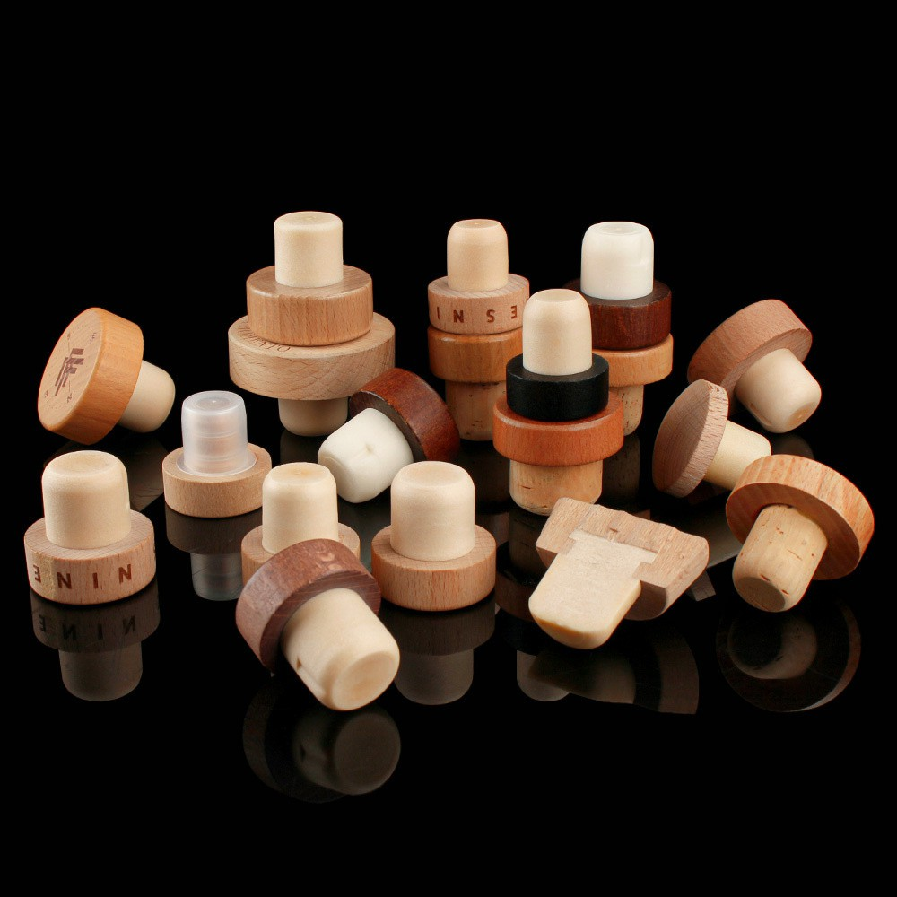
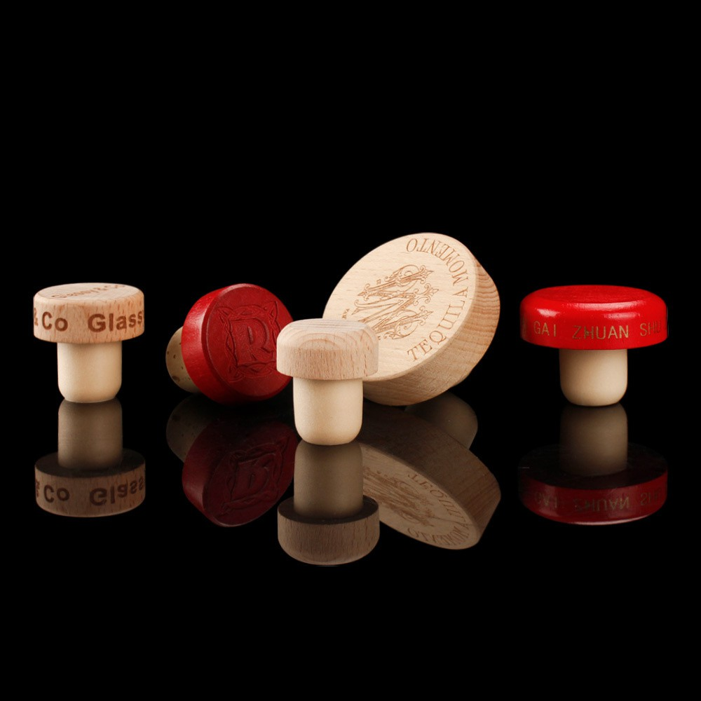
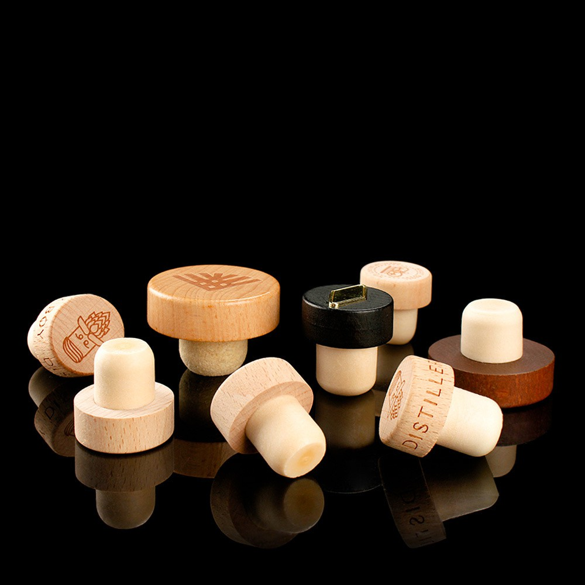

Custom Liquor Bottle Stoppers
Superior Sealing Performance & Durable Construction, injected synthetic stoppers
Wide Range of Liquor Bottle Stoppers, wooden, aluminum, plastic, zamac, crystal glass
Customizable Design Options, different shapes, colors effects, engraved or printed logo
Food Safety Standard Material, natural cork, synthetic stopper, zinc stopper
Low MOQ with Fast Turnaround Time, 5000pcs could be started, 25 days
Strict Quality Control System & Quality Assurance Team
Flexible & Safety Packaging, custom Presswood pallets
Door to Door Shipping Service,multimodal transport (air, sea shipping, express shipping)

Professional Liquor Bottle Stoppers Manufacturer in China
KIWL a trusted manufacturer and supplier of liquor bottle stoppers, specialize in supplying luxury spirits & liquor bottle stoppers designed to offer secure sealing, preserve flavor, and elevate the visual appeal of your premium liquor glass bottles. We have the different bartop material of liquor bottle stoppers including aluminum bottle stoppers, plastic bottle stoppers, wooden bottle stoppers, zamac bottle stoppers, crystal bottle stoppers,Polymer bottle stopper, they are fit to a wide range of liquor glass bottles, including vodka, gin, whiskey, rum, tequila and brandy glass bottles.
For cork stoppers, we have different materials for them including natural cork, Filled cork and synthetic stoppers. All of them comply with FDA or EU food safety standards, they can be in direct contact with food. And they could be assembled with different bartop head of liquor bottle stoppers, they can be matched to create various combinations in order to meet the diversified market demands, each of liquor bottle stoppers offer a perfect blend of functions, durability, aesthetics and cost-effectiveness.
We offer various options for custom liquor bottle stoppers, we can add printing and embossing logo on the top & side of our standard T shape liquor bottle stoppers that includes aluminum T-top, wooden T-top, plastic T-top cork stoppers, all of them are the common size in the spirits industry. Besides, we can also develop your own tailored custom-molded liquor bottle stoppers according to your requirements, like zamac metal bartop, crystal glass bartop and plastic bartop closures, we can develop the mold to create your unique design with elegant, vintage or luxury appearance.
|
Natural Cork: Cork closures from KIWL add a classic, premium feel to wine bottles, spirit bottles, olive oil bottles, and specialty food packaging. Corktops are often associated with quality and craftsmanship, making them a strong branding choice for artisan and small-batch producers. We carry bartop corks that feature a decorative wood or plastic top fused to a synthetic shank for easy insertion and removal without a corkscrew. Whether you're packaging a small-batch bitters line, a craft vinegar, or a specialty liquor, our corktops deliver the look and function your product deserves. All cork closures are available at wholesale pricing with no minimum order. |
Filled Cork: Filled cork is an economical and environmentally friendly sealing solution, widely used in wine, spirits, food, cosmetics and laboratories. Although its air permeability and durability are not as good as natural cork, it has significant advantages in repair and replacement. Choosing the right filled cork can effectively extend the service life of the bottle stopper, reduce costs, and reduce environmental impact. |
|
Polymer Cork: It is a bottle stopper made by mixing cork particles with environmentally friendly adhesives and undergoing a high-temperature and high-pressure molding process. It retains the characteristics of natural cork and makes up for its shortcomings. |
Polymer cork with patch: It is a bottle stopper that combines the advantages of natural cork and polymer cork, and is widely used in mid-to-high-end wines, spirits, food, cosmetics, and laboratories. It has superior performance, high-end appearance, and is environmentally friendly, making it particularly suitable for wines that require moderate oxidation. Although it may have limitations in high-end wines and long-term aging, polymer cork with patch performs well in most daily applications and is an economical and practical choice. |
|
Pure polymer stopper: a bottle stopper made entirely of synthetic materials, widely used in wine, spirits, food, cosmetics and laboratories. It has superior performance, low cost and environmental protection, and is particularly suitable for low-end and mid-range wines and short-term aged wines. Although it may have limitations in high-end wines and long-term aging, pure polymer stoppers perform well in most daily applications and are an economical and practical choice. |
Liquor stopper: Liquor stopper is a kind of bottle stopper specially used for sealing liquor bottles, which has high sealing, durability and decorativeness. It is widely used in the sealing of whiskey, brandy, vodka, rum and other liquors. According to the grade and demand of the liquor, different types of bottle stoppers can be selected, such as natural cork, polymer cork, polymer stopper, glass stopper or metal stopper. Liquor stopper can not only effectively prevent alcohol volatilization and external pollution, but also enhance the appearance and brand image of the bottle. It is a bottle stopper with both function and beauty. |
|
Glass Stopper: A component used to seal containers, usually made of glass material, generally cylindrical in shape, with various designs on the top, such as spherical, flat, etc., for easy handling and gripping. The size of the glass stopper varies according to the size of the container it is adapted to, ranging from tiny reagent bottle glass stoppers to larger glass bottle glass stoppers. |
Champagne Corks: Traditional champagne corks are mainly made of cork, which has good elasticity, sealing and chemical stability. Now there are also some champagne corks made of silicone, which have the advantages of good flexibility and not easy to age. |
-
 Zinc Alloy Bottle CorkMaterial:Zinc AlloyUse:BottlesProduct Name:Zinc Alloy Bottle CorkBrand Name:KIWLType:Bottle StopperSize:CustomizedLogo:CustomizedShape Personalized:AcceptCustom Design:Acceptread more
Zinc Alloy Bottle CorkMaterial:Zinc AlloyUse:BottlesProduct Name:Zinc Alloy Bottle CorkBrand Name:KIWLType:Bottle StopperSize:CustomizedLogo:CustomizedShape Personalized:AcceptCustom Design:Acceptread more -
 High Grade Zinc Alloy StopperMaterial:Zinc AlloyUse:BottlesProduct Name:Zinc Alloy StopperBrand Name:KIWLType:Bottle StopperSize:CustomizedLogo:CustomizedShape Personalized:AcceptCustom Design:Acceptread more
High Grade Zinc Alloy StopperMaterial:Zinc AlloyUse:BottlesProduct Name:Zinc Alloy StopperBrand Name:KIWLType:Bottle StopperSize:CustomizedLogo:CustomizedShape Personalized:AcceptCustom Design:Acceptread more -
 T-shape Wooden Top Polymer PlugProduct Name: T-shape Wooden Top Polymer PlugBrand Name: KIWLMaterial: Wood & PolymerCustom Design: AcceptLogo: CustomizedPlace of Origin: Shandong ChinaType: Spirit/Wine BottleColor: CustomizedTechnic: Silk Screen Printing/Decorationread more
T-shape Wooden Top Polymer PlugProduct Name: T-shape Wooden Top Polymer PlugBrand Name: KIWLMaterial: Wood & PolymerCustom Design: AcceptLogo: CustomizedPlace of Origin: Shandong ChinaType: Spirit/Wine BottleColor: CustomizedTechnic: Silk Screen Printing/Decorationread more -
 T-shape Wooden Top Polymer CorkProduct Name: T-shape Wooden Top Polymer CorkBrand Name: KIWLMaterial: Wood & PolymerCustom Design: AcceptLogo: CustomizedPlace of Origin: Shandong ChinaType: Spirit/Wine BottleColor: CustomizedTechnic: Silk Screen Printing/Decorationread more
T-shape Wooden Top Polymer CorkProduct Name: T-shape Wooden Top Polymer CorkBrand Name: KIWLMaterial: Wood & PolymerCustom Design: AcceptLogo: CustomizedPlace of Origin: Shandong ChinaType: Spirit/Wine BottleColor: CustomizedTechnic: Silk Screen Printing/Decorationread more -
 T-shape Wooden Top Oak CorkProduct Name: T-shape Wooden Top Oak CorkBrand Name: KIWLMaterial: Wood & OakCustom Design: AcceptLogo: CustomizedPlace of Origin: Shandong ChinaType: Spirit/Wine BottleColor: CustomizedTechnic: Silk Screen Printing/Decorationread more
T-shape Wooden Top Oak CorkProduct Name: T-shape Wooden Top Oak CorkBrand Name: KIWLMaterial: Wood & OakCustom Design: AcceptLogo: CustomizedPlace of Origin: Shandong ChinaType: Spirit/Wine BottleColor: CustomizedTechnic: Silk Screen Printing/Decorationread more -
 T-shape Wooden Top Glass Bottle CorkProduct Name: T-shape Wooden Top Glass Bottle CorkBrand Name: KIWLMaterial: Wood & PolymerUse: Packing SpiritsCustom Design: AcceptLogo: CustomizedPlace of Origin: Shandong ChinaType: Spirit/Wine BottleColor: CustomizedTechnic: Silkread more
T-shape Wooden Top Glass Bottle CorkProduct Name: T-shape Wooden Top Glass Bottle CorkBrand Name: KIWLMaterial: Wood & PolymerUse: Packing SpiritsCustom Design: AcceptLogo: CustomizedPlace of Origin: Shandong ChinaType: Spirit/Wine BottleColor: CustomizedTechnic: Silkread more -
 T-shape Wooden Top Glass Bottle PlugProduct Name: T-shape Wooden Top Glass Bottle PlugBrand Name: KIWLMaterial: Wood & PolymerUse: Packing SpiritsCustom Design: AcceptLogo: CustomizedPlace of Origin: Shandong ChinaType: Spirit/Wine BottleColor: CustomizedTechnic: Silkread more
T-shape Wooden Top Glass Bottle PlugProduct Name: T-shape Wooden Top Glass Bottle PlugBrand Name: KIWLMaterial: Wood & PolymerUse: Packing SpiritsCustom Design: AcceptLogo: CustomizedPlace of Origin: Shandong ChinaType: Spirit/Wine BottleColor: CustomizedTechnic: Silkread more -
 T-shape Wooden Bottle CorkProduct Name: T-shape Wooden Bottle CorkBrand Name: KIWLMaterial: Aluminum & PolymerUse: Packing SpiritsCustom Design: AcceptLogo: CustomizedPlace of Origin: Shandong ChinaType: Spirit/Wine BottleColor: ClearTechnic: Silk Screenread more
T-shape Wooden Bottle CorkProduct Name: T-shape Wooden Bottle CorkBrand Name: KIWLMaterial: Aluminum & PolymerUse: Packing SpiritsCustom Design: AcceptLogo: CustomizedPlace of Origin: Shandong ChinaType: Spirit/Wine BottleColor: ClearTechnic: Silk Screenread more -
 Aluminum Top Polymer PlugProduct Name: Aluminum Top Polymer PlugBrand Name: KIWLMaterial: Aluminum & PolymerUse: Packing SpiritsCustom Design: AcceptLogo: CustomizedPlace of Origin: Shandong ChinaType: Spirit/Wine BottleColor: ClearTechnic: Silk Screenread more
Aluminum Top Polymer PlugProduct Name: Aluminum Top Polymer PlugBrand Name: KIWLMaterial: Aluminum & PolymerUse: Packing SpiritsCustom Design: AcceptLogo: CustomizedPlace of Origin: Shandong ChinaType: Spirit/Wine BottleColor: ClearTechnic: Silk Screenread more -
 T-shape Wooden Top Bottle CorkProduct Name: T-shape Wooden Top Bottle CorkBrand Name: KIWLMaterial: Wood & PolymerUse: Packing SpiritsCustom Design:AcceptLogo: CustomizedPlace of Origin: Shandong ChinaColor: ClearTechnic: Silk Screen Printing/Decoration Firing/Hotread more
T-shape Wooden Top Bottle CorkProduct Name: T-shape Wooden Top Bottle CorkBrand Name: KIWLMaterial: Wood & PolymerUse: Packing SpiritsCustom Design:AcceptLogo: CustomizedPlace of Origin: Shandong ChinaColor: ClearTechnic: Silk Screen Printing/Decoration Firing/Hotread more -
 Zamak Zinc Alloy Spirit StopperIntroducing our Zamak zinc alloy wine stopper—specifically designed for premium spirits such as whisky. The top is made of durable zinc alloy material with a sleek design to ensure a stylish seal. The bottom uses ultra-fine particleread more
Zamak Zinc Alloy Spirit StopperIntroducing our Zamak zinc alloy wine stopper—specifically designed for premium spirits such as whisky. The top is made of durable zinc alloy material with a sleek design to ensure a stylish seal. The bottom uses ultra-fine particleread more -
 Customized Wood Top Cork StopperMaterial:WoodUse:BottlesProduct Name:Customized Wood Top Cork StopperBrand Name:KIWLType:Bottle StopperSize:CustomizedLogo:CustomizedShape Personalized:AcceptCustom Design:Acceptread more
Customized Wood Top Cork StopperMaterial:WoodUse:BottlesProduct Name:Customized Wood Top Cork StopperBrand Name:KIWLType:Bottle StopperSize:CustomizedLogo:CustomizedShape Personalized:AcceptCustom Design:Acceptread more
The materials of liquor bottle stoppers are important for premium aged spirits (like whiskey, rum, tequila,congac, brandy), they not only have sealing functions but also have luxurious, handcrafted presentation. Our custom wooden bottle stoppers, plastic bottle stoppers, metal bottle stoppers and crystal bottle stoppers are ideal for prestige spirits, they could be produced in different shapes or styles with different color effects including vintage, traditional, modern, luxury characters.
If you want to develop your own design styles of liquor bottle stoppers, KIWL could be the best choice, the mold cost of Chinese suppliers is just one-tenth that of European suppliers. Our MOQ of custom liquor bottle stoppers could be started from 5,000pcs, and production lead time is just 25~35 days. We have completed over 500 items design for custom whiskey & liquor bottle stoppers, we have rich designs and manufacturing experience to offer tailored whiskey bottle stoppers for your brands.

Customized Liquor Stoppers

Liquor stoppers are used to seal liquor bottles, and are commonly found in whiskey, brandy, vodka, rum and other alcoholic beverages. Their main function is to prevent the liquor from evaporating and oxidizing, and to maintain the flavor and quality of the liquor. There are many types of liquor stoppers, and liquor stoppers are crucial in liquor packaging. Their materials and designs directly affect the preservation and quality of the liquor. According to the type, quality and storage requirements of the liquor, choosing the right liquor stopper can effectively maintain the flavor of the liquor and extend its shelf life.
As a professional supplier of liquor bottle stoppers, from design to manufacturing, we offer end-to-end service for your project, we have been exporting liquor bottle stopper in different shopping method(ocean freight, air freight, express freight, multimodal transport) for over 20 years, our shopping agents could offer very competitive price with timely delivery time.
Based on your quantity order and schedule, we could offer different shipping options for your choosing, we are committed to offer reliable cost-effective options with timely ETA (Estimated Time of Arrival).
Our address
Building 4, Xingyuan Road, Nanfeng Town, Zhangjiagang City, Jiangsu Province, China
Phone Number
(86)135 8989 2639

Jiangsu KIWL Machinery Manufacturing Group Co., Ltd is well-known as one of the leading bottle stopper manufacturers and suppliers in China. If you're going to wholesale bulk high quality bottle stopper at competitive price, welcome to get more information from our factory.
-
 High Quality Capsules PVC Material For Spirit PackingProduct Name: Customized CapsulesMaterial: PVCCustomized Order: Highly WelcomedMOQ:50000pcsPacking: Carton andread more
High Quality Capsules PVC Material For Spirit PackingProduct Name: Customized CapsulesMaterial: PVCCustomized Order: Highly WelcomedMOQ:50000pcsPacking: Carton andread more -
 Customized PVC Capsules For Liquor PackingProduct Name: Customized CapsulesMaterial: PVCCustomized Order: Highly WelcomedMOQ:50000pcsPacking: Carton andread more
Customized PVC Capsules For Liquor PackingProduct Name: Customized CapsulesMaterial: PVCCustomized Order: Highly WelcomedMOQ:50000pcsPacking: Carton andread more -
 Customized Capsules Tamper-proof Cap For LiquorProduct Name: Customized Capsules Customized Order: Highly WelcomedMOQ:50000pcsPacking: Carton and PalletDeliver Time:read more
Customized Capsules Tamper-proof Cap For LiquorProduct Name: Customized Capsules Customized Order: Highly WelcomedMOQ:50000pcsPacking: Carton and PalletDeliver Time:read more -
 Popular Fashion Customized Cap PVC Capsules For Glass BottleCapsules are usually made of heat-shrinkable materials such as PVC and PET or rubber as the base material, throughread more
Popular Fashion Customized Cap PVC Capsules For Glass BottleCapsules are usually made of heat-shrinkable materials such as PVC and PET or rubber as the base material, throughread more -
 High Quality Customized Paper Gift Box Cardboard Box For Liquor Wine Bottle P...Product Name: Customized Gift BoxMaterial: PaperUsage: Liquor Wine Bottle PackingSize: Customized AcceptColor:read more
High Quality Customized Paper Gift Box Cardboard Box For Liquor Wine Bottle P...Product Name: Customized Gift BoxMaterial: PaperUsage: Liquor Wine Bottle PackingSize: Customized AcceptColor:read more -
 Custom Logo Design Paper Tube BoxesBrand Name:KIWL. Product Name:Paper tube packaging. Industrial Use:Gift & Craft. Feature:Reusable, Recycledread more
Custom Logo Design Paper Tube BoxesBrand Name:KIWL. Product Name:Paper tube packaging. Industrial Use:Gift & Craft. Feature:Reusable, Recycledread more